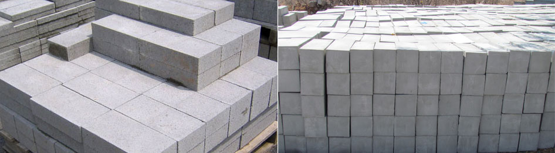

Procedure

Those who build using Duralite AAC demand high quality and reliable building materials. The combination of cost effective and safe construction pays off from the very beginning.
Good Site Practices
- All site work should be done as per IS-6041 (1985)
- First course of the block work to be done with conventional mortar (1:6 Cement: Sand) to compensate for the irregularities in the foundation slab. It is essential that the first course to be laid correctly and level, so that speed and accuracy can be achieved in the subsequent courses. Consecutive block work to be done next day after the base course is cured and well set.
- Block surface should be brush cleaned of dust and loose particles and pre-wetted with a piece of sponge soaked in water
- Blocks can be cut with hand saw or electric cutter/saw to the correct length at the end of the course
- Mortar to be applied with a notched trowel of the same width as the block
- The consistency of the mortar should be such that it flows easily through the teeth of the trowel
- With Conventional Mortar - Vertical & Horizontal joint thickness to be min 8-10mm
- With Thin Bed Mortar - Vertical & Horizontal joint thickness to be min 3-4mm
- Horizontal & vertical joints to be completely filled
- Excess adhesive / mortar to be removed
- Damaged blocks to be repaired
- Blocks overlapping to be maintained at min 150 mm and should be kept consistent for a running bond
- Coping to placed at height equal to 10 times the width of the wall
- Depths of chasing not to be greater than 1/3 of the wall thickness (generally snug fit)
- Window sill to placed at the bottom of the window opening, The reinforcement should extend at least 600mm beyond each side of the opening
- Window - Fiber Glass Mesh 15"x15" should be placed on all the 4 corners of the window to arrest possible stress cracks
- Door - Fiber Glass Mesh 15"x15" should be placed on the 2 corners of the door and over the hold fast area to avoid stress cracks
- Conduits - Fiber Glass Mesh should be placed over the electrical conduits
- Different Materials - Fiber Glass Mesh is recommended at places when crossing over discontinuous substrates
- Construction of Lift walls using AAC Blocks is strictly not recommended